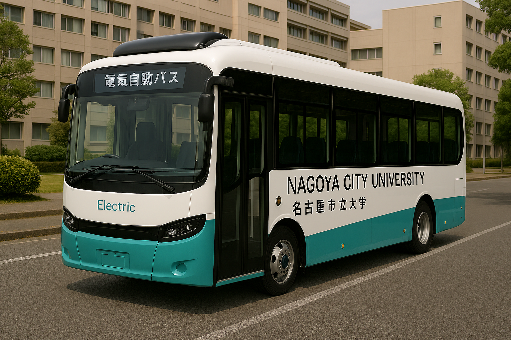

大学・企業・学生が連携する、革新的なモビリティサービス
Campus Mobility Projectは、名古屋市立大学の学生の移動を支援するとともに、
企業にとっての新たな広告機会を提供する革新的な産学連携プロジェクトです。
大学が提供する車両を学生が無料で利用できるサービス。学業、研究活動、就職活動など幅広い用途で利用可能です。
4つのキャンパス間を結ぶ自動運転バス。最新技術を活用し、安全で効率的な移動を提供します。
車両・バスの外側や内側、デジタルサイネージを活用した多様な広告メディアを企業に提供します。
企業と大学の長期的なパートナーシップを構築し、学生の学びと社会との接点を創出します。
最新の電気自動運転技術を搭載した、環境に優しく安全な移動手段

100%電気で動作し、CO2排出量ゼロ。環境に配慮したクリーンな移動を実現します。
最新のAI技術とセンサーにより、安全で正確な自動運転を実現。運転手不要の移動サービス。
専用アプリで現在位置、到着予定時刻、混雑状況をリアルタイムで確認できます。
企業が広告費を支払い、車両・バスに広告を掲載。この広告収入がサービス運営の基盤となります。
大学がリースした車両と自動運転バスを学生・教職員が利用可能な状態で管理・運営。
専用アプリで予約を行い、学生証と運転免許証があれば誰でも無料でサービスを利用できます。
広告収入により継続的な運営を実現し、学生への移動支援と企業への広告価値の両立を図ります。
最新のAI技術を活用した自動運転バス。安全性と効率性を両立し、キャンパス間移動を革新します。
「キャンパスカーシェア予約」アプリで車両検索から予約、利用まで全てをデジタル管理。
キリックスリースのテレマティクスサービスによる運転技能評価でランク制を実現。
バス内32インチモニターによる動画・静止画広告配信。リアルタイム情報更新に対応。
学生の行動範囲が広がることで、インターンシップ、研究活動、ボランティア等の機会が増加。
実社会との接点拡大により、より実践的な学びを実現します。
地域企業と大学の連携強化により、名古屋圏の産学連携エコシステムを発展。
新たなビジネスモデルとして他地域への展開も期待されます。
自動運転技術の実証実験フィールドとして機能し、
次世代モビリティ技術の発展に貢献します。
名古屋市立大学はSDGsに力を入れています。
CO2の排出量削減、持続可能な社会へ取り組みに挑戦します。